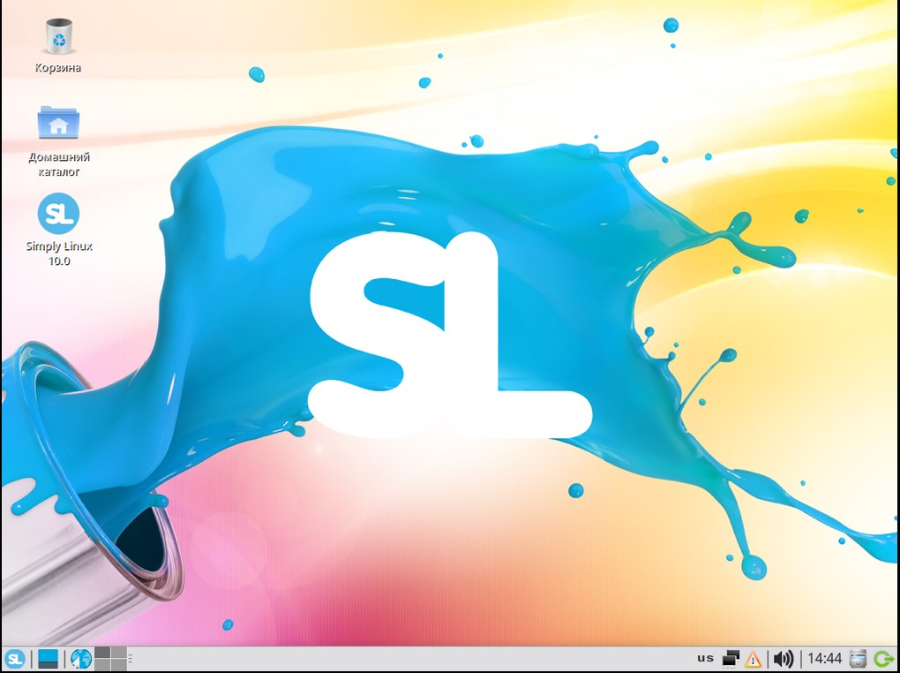
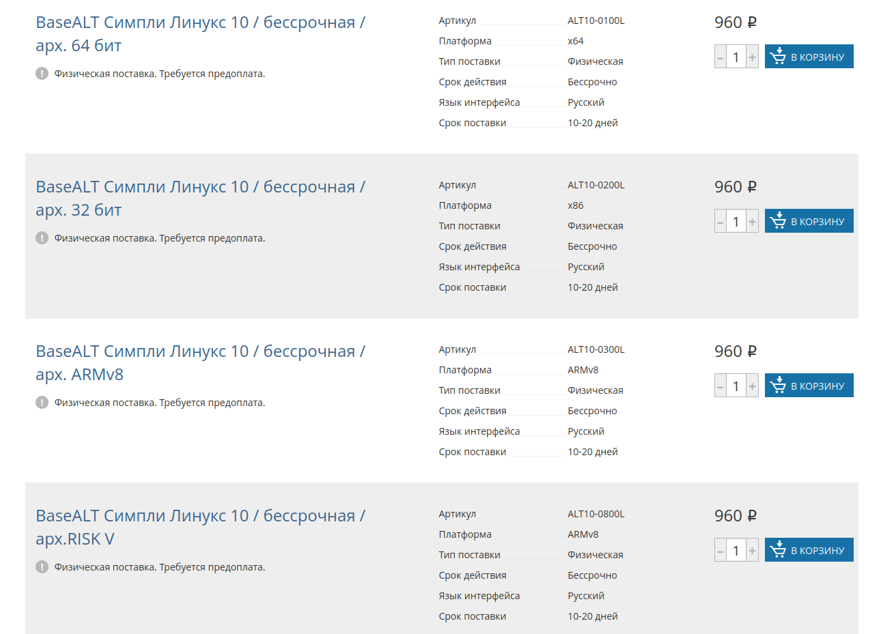

Российская ОС Simply Linux теперь бесплатно и бессрочно доступна всем организациям и пользователям
Разработка под Linux *Софт Настольные компьютеры Ноутбуки IT-компании

24 марта разработчики российской ОС Simply Linux объявили, что теперь все пользователи и организации могут скачать и установить ее себе бесплатно и бессрочно, как для домашнего, так для коммерческого использования.
Компания Базальт СПО (BaseALT) пояснила, что пошла на такой шаг из-за текущей ситуации на профильном рынке ПО и ухода с него многих иностранных компаний
Операционная система Simply Linux всегда была самой «домашней» из семейства ОС «Альт», но она вполне пригодна для оснащения рабочих мест сотрудников. Она обладает всеми возможностями привычной пользователям Windows: современная, функциональная, интуитивно понятная и очень удобная. Вместе с Simply Linux пользователь получает набор прикладных программ для повседневных нужд, поэтому домашнее и рабочее место можно полностью укомплектовать буквально за несколько часов. Акция «Базальт СПО» для российских пользователей останется бессрочной независимо того, как в дальнейшем зарубежные софтверные компании будут взаимодействовать с нашим ИТ-рынком»,
— пояснил генеральный директор «Базальт СПО».
Скачать дистрибутивы Simply Linux (версий 9 и 10) можно с этого раздела сайта «Базальт СПО».
ОС Simply Linux поддерживает ПК на архитектурах:
Ранее данную ОС можно было купить за 960 рублей.

История Simply Linux началась в 2009 году, когда разработчик команды ALT Linux Team Денис Корявов выпустил первую версию дистрибутива для дома и офиса, ориентированного на начинающего пользователя. В 2010 году Корявов передал свои наработки компании «Альт Линукс», которая выпустила еще несколько версий дистрибутива на базе своей платформы.
В настоящее время разработку Simply Linux продолжает компания «Базальт СПО». Разработчик старается придерживаться основных принципов, заданных автором дистрибутива с первым выпуском: небольшое количество функциональных русифицированных программ, простота в использовании, комфортный для работы интерфейс, минимальные требования к оборудованию.
Теги:
Хабы: